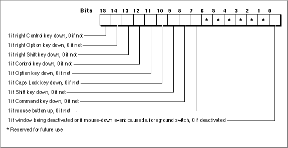

Obtaining Information About Events
You get information about events through the event record. TheEventRecorddata type defines the event record and has this structure:TYPE EventRecord = RECORD what: Integer; {event code} message: LongInt; {event message} when: LongInt; {ticks since startup} where: Point; {mouse location} modifiers: Integer; {modifier flags} END;
Field Description
what- The
whatfield indicates the type of event received. The type of event can be identified by these constants:CONST nullEvent = 0; {no other pending events} mouseDown = 1; {mouse button pressed} mouseUp = 2; {mouse button released} keyDown = 3; {key pressed} keyUp = 4; {key released} autoKey = 5; {key repeatedly held down} updateEvt = 6; {window needs updating} diskEvt = 7; {disk inserted} activateEvt = 8; {activate/deactivate window} osEvt = 15;{operating-system event-- } { resume, suspend, or } { mouse-moved} kHighLevelEvent = 23;{high-level event}Each of the modifier keys is represented by a specific bit in the
message- The
messagefield contains additional information associated with the event. The interpretation of this information depends on the event type. The contents of themessagefield for each event type are summarized here:
Event type Event message null, mouse-up, mouse-down Undefined. key-up, key-down, auto-key Character code and virtual key code in low-order word. For Apple Desktop Bus (ADB) keyboards, the low byte of the high-order word contains the ADB address of the keyboard where the keyboard event occurred. The high byte of the high-order word is reserved. update, activate Pointer to the window to update, activate, or deactivate. disk-inserted Drive number in low-order word, File Manager result code in high-order word. resume The suspendResumeMessageconstant in bits 24-31 and a 1 in bit 0 to indicate the event is a resume event. Bit 1 contains either a 1 or a 0 to indicate if Clipboard conversion is required, and bits 2-23 are reserved.suspend The suspendResumeMessageconstant in bits 24-31 and a 0 in bit 0 to indicate the event is a suspend event. Bit 1 is undefined, and bits 2-23 are reserved.mouse-moved The mouseMovedMessageconstant in bits 24-31. Bits 2-23 are reserved, and bit 0 and bit 1 are undefined.high-level Class of events to which the high-level event belongs. The messageandwherefields of
a high-level event define the specific type of high-level event received.when- The
whenfield indicates the time when the event was posted (in ticks since system startup). When needed, you can use thewhenfield to compare how much time has elapsed between successive mouse events.where- For low-level events and operating-system events, the
wherefield contains the location of the cursor at the time the event was posted (in global coordinates).- For high-level events, the
wherefield contains a second event specifier, the event ID. The event ID defines the particular type of event within the class of events defined by themessagefield of the high-level event. For high-level events, you should interpret thewherefield as having the data typeOSType, notPoint.modifiers- The
modifiersfield contains information about the state of the modifier keys and the mouse button at the time the event was posted. For activate events, this field also indicates whether the window should be activated or deactivated. In System 7 it also indicates whether a mouse-down event caused your application to switch to the foreground.modifiersfield of the event record. Figure 2-5 shows how to interpret themodifiersfield. You can examine themodifiersfield of the event record to determine which, if any, of the modifier keys were pressed at the time of the event. The modifier keys include the Option, Command, Caps Lock, Control, and Shift keys. If your application attaches special meaning to any of these keys in combination with other keys or when the mouse button is down, you can test the state of themodifiersfield to determine the action your application should take. For example, you can use this information to determine whether the user pressed the Command key and another key at the same time to make a menu selection.Figure 2-5 The
modifiersfield of the event record
Bit 0 in the
modifiersfield gives additional information that is valid only if the event is an activate event or a mouse-down event.For activate events, the value of bit 0 is 1 if the window pointed to by the event message should be activated, and the value is 0 if the window should be deactivated.
For mouse-down events in System 7, bit 0 indicates whether a mouse-down event caused your application to switch to the foreground. If so, bit 0 contains 1; otherwise,
it contains 0.You can also use these constants as masks to test the setting of various bits in the
modifiersfield:CONST activeFlag = 1; {set if window being activated or if } { mouse-down event caused fgnd switch} btnState = 128; {set if mouse button up} cmdKey = 256; {set if Command key down} shiftKey = 512; {set if Shift key down} alphaLock = 1024; {set if Caps Lock key down} optionKey = 2048; {set if Option key down} controlKey = 4096; {set if Control key down}Note that the bit giving information about the mouse button is set if the mouse button is up. The bits for the modifier keys are set if the corresponding key is down.Some keyboards do not distinguish between the right or left Control, Shift, and Option keys; for example, the virtual key code for the right Shift key and left Shift key might be the same. For these keyboards, if the user presses the Control, Shift, or Option key, the Event Manager sets only the bits corresponding to the
shiftKey,optionKey, andcontrolKeyconstants. For keyboards that do distinguish between these keys, the Event Manager sets the bits in themodifiersfield to indicate whether the right or left Control, Shift, or Option keys were pressed. For example, the Event Manager sets bit 13 in themodifiersfield if the user presses the right Shift key and sets bit 9 if the user presses the left Shift key. In most cases your application should not need to distinguish between the left and right Control, Shift, and Option keys.